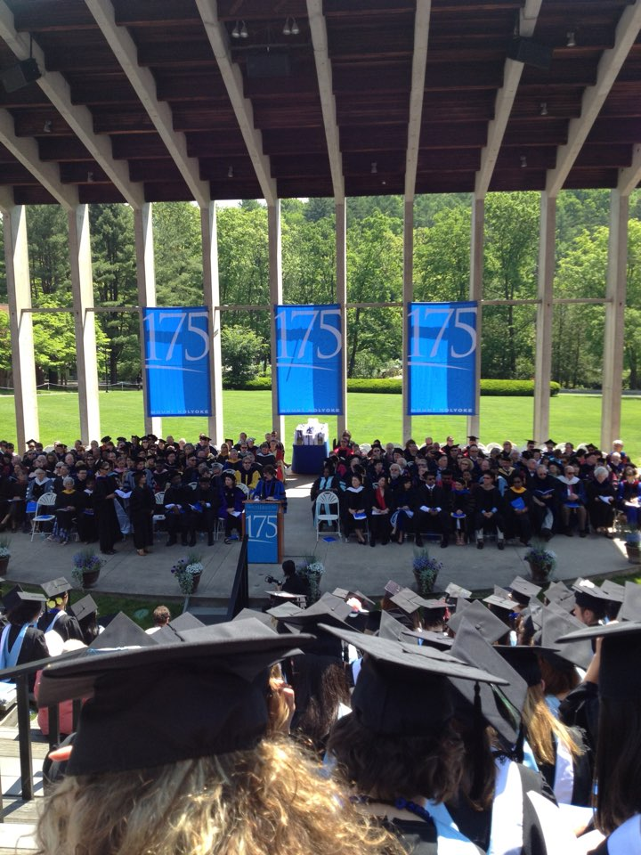

2012.05~2012.06, 약 1달 간의 미국 여행

MIT, Massachusetts Institute of Technology 이다. 그 어느 나라의 공대생이라면 누구라도 가고싶어할 공과대학이다. 아버지께선 내가 이 대학교로 진학하는 걸 정말 원하셨지만, 실패.....^-^; 캠퍼스는 솔직히 이쁘다고는 말할 수 없었다. 이쁘다기보단 엔틱한 느낌을 많이 받았다. 여담으로, 캠퍼스 내에서 책을 들고 다니는 재학생들이 너무 멋있어보여 공과대학생의 꿈을 갖게 되었다.
나의 친누나의 Mount Holyoke College 졸업식 사진이다. 이 대학교는 Boston 에 위치하는데, 세계 최초(?)의 여자 대학교라고 한다. 현재 누나는 30살로, San Fransico 에서 Dolby Sound 에서 일하고 있다.
뉴욕, 뉴저지, 보스턴, LA, 라스베가스, 클리브랜드 등 다녀온 곳은 어릴 때부터 정말 많지만 그 당시에 사진을 많이 남겨놓지 않아서 아쉽다.